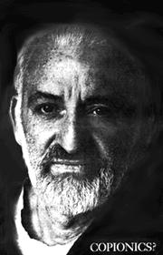

The following PLOWBOY INTERVIEW originally appeared in ZYGOTE, a new Rock- Culture magazine (out of New York recently and, while there, stopped in to get acquainted with the ZYGOTE staff. During that visit, I asked Allen Richards, the turned-on young writer responsible for this piece, if Arthur Shaw and his theory were really on the level. Allen immediately made arrangements for me to visit Mr. Shaw and his family in their apartment on Manhattan's upper west side. There, over a late Saturday breakfast and a magnificent view of the polluted Hudson River, I got to know Arthur Shaw just a little bit.
He's a fascinating individual with an elusive ability to seemingly offer answers while actually pulling new thoughts and clarified visions out of minds and - particularly - the hearts of those around him. After four hours with Arthur I was so turned on that I walked and thought myself completely across Manhattan from the Hudson to 1st Ave. and south from 92nd to 67th St. If you know the territory, you know that's a "fur piece". Arthur Shaw does things like that to you. - JS
There is a plan, there is a theory, there is a man who is trying desperately to shake the course of the world from what he feels, and what many ecologists have predicted, is the path leading to race suicide. There has been extensive research and mathematical planning and there has even been a word invented to describe his labors: Copionics.
Copionics is the theory that is being preached relentlessly by Dr. Arthur Shaw in an effort to make the "aware" people of our world realize the true situation on earth. Copionics is the theory of economic abundance . . . it is the plan that may possibly save the world from its fate.
I met Arthur Shaw about six months ago, and initially thought he was a deluded quack who must have gone mad sometime during his research and planning for this theory of Copionics. But that was before I really got acquainted with his life-style. He is not mad. He is definitely not mad. Arthur is a soft-spoken, deliberately-worded and prophet-like man, who has been involved with many inventive projects in the past. Here's some of his biography:
Shaw attended Brooklyn College, New York University, and St. John's University, where he received a Doctor of Jurisprudence degree. He has worked with his own organicchemical production company and headed a public corporation in plastics, where he did work on expandable plastics. He has been in construction and he did experiments in new forms, particularly in a concrete of his own design and invention.
Arthur once devised a scheme in communications called "envelets" which he proved would reduce the cost of letters by one-third. He's also done research in underwater craft. But Shaw's most important endeavor - and the exigency of this can not be stressed enough - is Copionics.
Exactly what does Copionics mean, what does it do, how will it help us? I can't give an all-inclusive, detailed report of this economic theory but I can offer this introduction to Dr. Arthur Shaw and his plan. Copionics is something 1 believe in, and that I feel is a valid offering to our society by a brilliant and devoted man. This is something I trust. I hope we will be witnessing Copionics in practice soon.
Plowboy: What is Copionics?
AS: Copionics is the theory of global sufficiency. It's both an idea, a theory, and a means of effectuating plenty on a planetary basis.
Plowboy: What are you trying to expound with the theory of Copionics besides plenty? What are you trying to tell the people of this planet that we have to do?
AS: The information about the plenty is becoming more and more general, a statement that there was enough for all on Earth was greeted with a good deal of doubt, questioning and - even - scorn not too many years ago.
Plowboy: Were they questioning your statement?
AS: Yes. I have been indicating global abundance as a mathematically provable fact. Something we can inventory and show for over a score of years.
Plowboy: Twenty years?
AS: Yes, more than that. Now at this point then, just the statement of plenty adds to existent growing knowledge. The idea to implement this plenty, and to implement it and effect it, is the contribution specifically of the program, World Economic Organization. W.E.O. is an expression and a program to demonstrate and prove Copionics. Your question is how does it operate, what does it say, how does it propose to effect plenty.
Copionics is a negation in itself of the very basis for our present scarcity - economics. It negates scarcity in that it states that the sufficiency of the planet can be made available to all its inhabitants. Moreover, the distribution and the satisfaction and fulfillment of all mankind can be accomplished gainfully. Perhaps this is the key: That we are not talking about a charitable or a give-away program - a program of "foreign aid" - but, rather, the expression of natural exchange.
Plowboy: What do you mean by natural exchange?
AS: We find that the processes by which man lives, whether they are technological or processes of nature or anatomical functions, are al l- in effect - natural in exchange. For example, our exchange with plants . . . the C02 - oxygen cycle . . is a free and gainful exchange between the parties to the "trade". There is no tariff, there is no charge and both plant and animal gain in the relationship. The nitrogen cycle, the formation of crystals in a super-saturated solution, are all examples of the largesse - of the abundance - in natural functions. The scarcity premise, the scarcity concept with which man has somehow burdened himself, is an unnatural precept. It does not sit with, nor is it normal, to natural life.
Plowboy: It's not in the natural way of living.
AS: It's not in the natural way of living nor is it consistent with fact. We have presupposed that there is not enough and the laws of the market have been devised to accord with this idea of "not enough" . . . which is wrong. We're challenged. As soon as we have begun to talk of sufficiency, and this is the nature of our present knowledge, we are faced with a challenge.
Plowboy: How do we effect it then? How do we deal with this sufficiency?
AS: In World Economic Organization - which, again, is the demonstration of Copionics - we take factual and actual data and conditions and assemble the data into a flow chart, a visible directive for our actions. To be more specific, we know what's produced in various areas of the globe. Certainly we know the need - need which we somehow accept today - in terms of two-thirds of the world's people being hungry and 10,000 starving to death per day.
We note these two series of facts - free availability and need - in the W.E.O. computer-programmed flow chart and, in the expression of the satisfaction of the need, we demonstrate the feasibility of free-flow exchange.
The prime question that occurs and will occur to any economist is, "how to effect payment, how to make free exchange happen, how to motivate free exchange." And here a notion of Copionics called resource credit is employed.
Plowboy: Could you give us some figures of the abundance of the food that could be distributed? How much do we waste, how much is there . . . how much most people don't even know about?
AS: The first expression of Copionics, in W.E.O., is in food, the food program. For there is the most apparent area for us to demonstrate sufficiency. The isolated pieces of news we have about the glut of wheat in Canada or the oversufficiency of potatoes plowed under out west is not persuasive enough. However, we have arbitrary and objective data.
For instance, the amount of cultivation on this planet - in terms of vegetation per day - comes to something in the area of over 200 pounds per capita. This represents vegetation which can be reprocessed, which can be extracted.
Plowboy: Over 200 pounds a day?
AS: Yes, per person. Presently, we share (or fail to share) two-thirds of a pound per person per day, and you and I know that when we eat one and a half pounds of food per day, we've lowered the amount for someone else, elsewhere.
This cultivation I refer to, by the way, is an unplanted amount of vegetation. This does not come by man's hands or effort. It is indicative of the abundance of nature itself.
Plowboy: Can we eat this vegetation?
AS: This can be recovered. There are known extraction processes, yes. We have a figure of one-half million square miles of cultivated land in the world which is devoted to wheat and soybeans and oats and so forth. We know that there are 5.5 million square miles of acreage suitable for immediate cultivation. That is to say, with the appropriate water, the right kind of soil and so on. So there is a reserve of 11 times what we presently use as cultivated land. Moreover, we are increasingly familiar with hybrid seeds that are five-fold productive - wheat, corn, rice and others - which, alone, can be a total solution to man's hunger.
Plowboy: Why is this not distributed? Why aren't corporations doing something about it?
AS: There's no profit in it. If people can't pay, then the exchange doesn't happen.
Plowboy: Do they know about it?
AS: They know that there's sufficiency or they certainly should know. This is their responsibility if they are in government, in the agri-food business, etc. These are items of knowledge that are available to anyone. The politicians certainly should know.
Again, it comes back to our constraint: There is an economic premise of scarcity and, somehow, that premise of scarcity has governed our decisions. This isthe way it is! And once the premise is accepted, all of the laws of economics automatically evolve - The Law of Supply and Demand, The Law of the Least Useful Unit - all things we learn at school and accept and nod our heads to.
This is the shape of the world. This is the existing situation and we accept it. We're conditioned to this and not only in school. I mean, this is the way our parents react because they accept this. No one denies this total commandment. We are all 'hooked' on scarcity . . .
There's a definition of the Law of Supply and Demand that I think I should give. One economist, Samuelson, puts it, "When the rich man's dog gets the milk that the poor man's child needs to avoid rickets, is the system working badly? No. It is working as it is designed to do - putting goods in the hands of those with the most money or dollar votes."
This may sound reprehensible. Actually, it is colloquially well put and it represents the accepted economics - the exchange situation - in our world. We have given up.
Since we all accept the false premise - there's not enough - since our world is so governed, the gaps increase between nations, as they do between races and peoples. And, of course, the gap between generations and minds seems equally to conform. It is this gap, with its many faces, that is our threat today. Because it is this gap expressed in environmental destruction, expressed in war and violence, which represents the many faces of our fixed system.
Plowboy: Does Copionics require violence or revolution?
AS: For some of us, angry and committed to deep change, there may be at first some disappointment. For Copionics requires no violence, no expropriation. Copionics is deep change. The realization of sufficiency can be effected and expressed and accomplished with no harm to any group or any class.
Plowboy: Wouldn't this radically change our society though? I mean, there's some guy across the street who must be watching his color television.and dreaming of his freshly polished Cadillac. Would he have to worry - I mean would he say, "I can't let this happen, what about my TV and Cadillac?"
AS: Well, the super-abundance of our world - of our life - the amazing sufficiency expressed in the comprehension that there is limitless energy flowing into our world, puts the Cadillac in an appropriate perspective. No one need want more than that . . . the lives of us all would be full and fulfilled.
You ask how all this will change our lives? I think the expression of free-flow that man will see and enjoy will create for him the realization that he can enlarge himself in terms of feeling, in terms of idea; in terms of expression. In matters that have real meaning . . .
Plowboy: We're so restricted . . .
AS: Yes. Plowboy: We should stop listening to all the ideas that have been put down, that say, "Do it this way." We're asking - and you're asking - for what appears to be a human revolution.
AS: Yes, I think that is the fundamental thing. If we break through this basic constraint which is something we've been saddled with - the acceptance of scarcity - I think the implications will free us in every way. And I think the students, the young people, sense this - realize this, feel this - and that Copionics provides them with a program, a tangible device to show this to all people, to show this to their parents, to show this to the businessman, to show this to the technician, to show it to the world.
Plowboy: You mentioned college students growing more aware of Copionics. What has been happening on college campuses with it?
AS: At one campus, Queens College, an Abundance Club has been started with the idea that the information - the facts that "we have it made" - can be told at the school level, as well as at all other levels of life.
You must remember that we are attempting to make pragmatic the facts of availability. Just to express it might mean continuation of our present affairs. What can we do? You know we're restrained by the Law of International Balance of Payments: Capital formation . . . growth for the Have countries, while the Have-Not countries become increasingly Have-Not.
What good is this information of sufficiency if it is not effected? And this is our challenge: To put this into program form, to put this into computerized statement. This is our work and objective, presently.
Plowboy: Could you mention where else there is work and consideration of Copionics occurring?
AS: The program has been discussed - not only with students - but with members of faculty, heads of universities and economists such as the heads of graduate schools at Columbia, Ohio State, etc. More than one university faculty member is a trustee in World Economics Organization. Presently, there are many professors and graduate students working on models for this program.
It's not the ecologists alone who pointed out that race suicide is our terminal point. All strata indicate the exponentially increasing danger to us all. We've all read the predictions that society is headed for a disaster.
Plowboy: I want to ask you about the computer system - how does this function in solving our problems? You said you feed in the data of abundance and scarcity and compute a "free-flow" or, I suppose, a nearly ideal distribution. Is this feasible? Can it be done?
AS: Yes, it can be done. Primarily and particularly because we are relying on the gain factor, the multiplier theorem which has acceptance and economic recognition. The expression of resource credit that I previously mentioned is the method and the means for justifying the exchange for "payment". With that credit provided, which in itself is backed by the true facts of global plenitude, It happens, It occurs: We have the balance of Supply with Need. I like to state this in present tense because this is something which is accomplishable NOW.
We do have it made. I mean, abundance is the condition of our world as an object, as an ascertainable, as a mathematical, as a realizable fact. And perhaps the word realization is the key. Because, in our knowledge that all men can benefit, we are presently divided. The fact of accumulation and its need is the cause for our wars and our dissatisfactions.
Plowboy: Well, how would you then distribute . . . who would distribute this abundance of food?
AS: If you look at the total idea as one of enlarging trade, I think the accomplishment becomes, not formidable, but easily comprehensible and assimilable. This, in effect, is what we do. We set forth that all the world is the market and that there is availability to supply all the world. The present channels, the present means, are continued. The mechanisms for distribution continue.
It's as though we come to you and say we can enlarge the Gross National Product of each country and the global product of the world. We are enlarging the market to encompass the two-thirds of the world that is not considered a market.
Plowboy: Don't you think it would hurt the present market system . . . keep it from functioning properly?
AS: No. There would be no alteration of our methodology for trade. Certainly there would be a greater assurance for those who produce because of an assured market. This is a gain over present technologies. The larger gain is in the profitable enlargement of the total market.
Plowboy: With this increase of distribution - where everyone, everywhere would receive food - do you think it would be possible to maintain a constant level? I mean, there would be no famine or wasted harvests? Could we actually have one constant level?
AS: Yes, that is our goal: Homeostatic balance.
Plowboy: Arthur, how do you think these economic changes would affect politics? What would be the political implications?
AS: I think political forms - the ones based on scarcity - will be varied, will be altered. I think they will coalesce and all forms will become one. Politics and political forms are economic expressions, and this is what we should stress. With the alteration of economics, political forms will alter too. And if scarcity is obsolete, of course these forms will convert over to something much more fulfilling to man.
If I can add something too, Allan: Many young people are concerned with "the computerized society". There's a large fallacy there, and a large need to get rid of: The fear that a machine will be running us.
It's hardly that. I mean, we merely turn over to a very efficient device, the computer, the rote and mechanical and ministerial functions of food-getting and the like. It's similar to our own body organization. We don't protest breathing or osmosis by our body mechanisms. Because of them, we're free . . . to think, to ideate.
In a sense, this ought to and can occur between men. Things which occur naturally, automatically, in our own anatomy will be occurring between men and we'll be free for the first time. Really free. To live, make love, create, play the guitar, whatever.
Plowboy: This may be very difficult for people to accept and to believe as a practical theory. It may sound too idealistic to many. How has the World Economic Organization been received?
AS: Well, the reaction has been pretty negative - up to the last three to five years.
Plowboy: Exactly how long have you been pursuing this plan?
AS: About 25 years. But today there is a growing kind of acceptance instead of the resistance (and that's putting it mildly) I met before. There are people now who just recognize and realize and feel and comprehend Copionics . . . and these are people not only in ecology or in mathematic sciences, but economists! And there's a feeling that there can be a break through this indomitable wall - this indomitable creation of scarcity - economics.
Plowboy: Do you think it's the growth of the ecological movement that's helped you, or is it just the growing awareness that we are in real trouble?
AS: I think ecology and awareness of trouble are really one. They represent a threat. I think Copionics will develop because of its promise, rather than as a result of any threat. Man's hope is the thing to look to.
Plowboy: Do many people tell you you're crazy?
AS: Oh yes, yes.
Plowboy: What's your reaction to that?
AS: There are people who find abundance a threat because scarcity is their accustomed way of thinking. Freud says the threat of health, the threat of success, is an awful one for many of us. Not only for the so-called "sick" people, but for most of mankind.
Plowboy: Arthur, I want to ask you one last question: Do you think you're crazy?
AS: (pause) Well, if man is bent on his own destruction, if the predictions of many of our best minds are correct and this species is coming to its end - inevitable end - then I think the criticism would be valid . . . I am crazy.
I offer an approach that is contrary to all our scarcity conditioning, an approach against the awful "design" of our present system. It would be the madness, then, of optimism, if you will. The madness of life against death. The madness of health against sickness.
"When the rich man"s dog gets the milk that the poor man's child needs to avoid rickets, is the system working badly? No. It is working as it is designed to do - putting goods in the hands of those with the most money or dollar votes. "
Is Arthur Shaw crazy? I know he's not. What about you?
The above interview is reprinted with permission of ZYGOTE Magazine, 80 Fifth Avenue, New York, N.Y. 10011.
|
 |
|
|